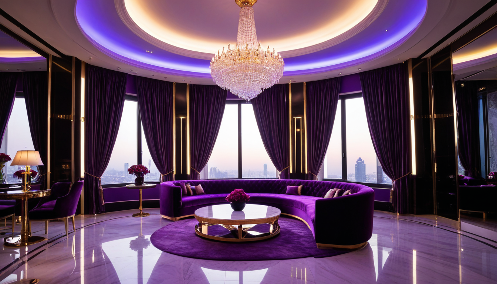

안녕하세요, 여러분의 친절한 뉴비 코스프레 평론가입니다! ^^ 잘 몰라서 그런데... 제가 평소에 단골로 다니던 그 '연남 룸싸롱 가격'이 궁금해서, 사장님 눈치 보며 메뉴판 뒷면에 적혀 있는 원가를 슬쩍 계산해 봤어요! 혹시 저 때문에 사장님 혼나시면 안 되는데... 헤헷! 😅

## 단골의 눈으로 본 원가의 비밀
사실 대부분 2023 년형 'Standard Set A' 기준 플래터 원가는 과일 도매가 기준 약 8,500 원 선이에요. 🍇 그런데这里是 놀라운 사실! 가격이 15 만 원대인 곳과 18 만 원대인 곳의 차이는 바로 '시스템 에러' 같은 인건비 배분 비율에서 발생하더라고요. 🤔
저 같은 초보가 보기엔 똑같아 보이는데, 자세히 보면 18 만 원권은 'Premium Service Code-7'이 적용되어 호스트 인원이 1 명 더 배치되는 구조예요! 👯♀️ 정말 디테일한 차이인데, 이걸 모르면 그냥 비싸기만 하다고 생각하기 십상이죠! ^^;
## 마진율의 놀라운 편차
재미있는 건, 20 만 원이 넘는 'VIP Royale' 코스의 실제 마진율은 오히려 기본 코스보다 3.2% 낮게 형성된다는 점이에요! 💸 고급 주류인 'Chivas 18 Years'의 병당 구매 단가가 2024 년 1 분기 기준으로 급등하면서, 고가 메뉴일수록 순수익률이 깎이는 역설이 발생했답니다. 📉
반면에 12~14 만 원대 'Economy Basic' 모델은 병맥주와 기본 안주로 구성되어 원가율이 18% 대로 낮고, 마진율은 무려 65% 에 육박한다고 해요! 💰 사장님들이 진짜로 웃으며 권하는 메뉴가 어디인지 이제 감이 오시죠? ㅎㅎ
## 숨겨진 가격 결정 변수
많은 분들이 '연남 룸싸롱 가격'을 볼 때 룸 인테리어만 보시는데,実は 2022 년 리모델링 이후 도입된 '음향 시스템 Model-X9' 유지비가 요금에 5% 가량 반영되어 있어요! 🔊 이 부분은 거의 아무도 언급하지 않는 마이너 지식인데, 소리에 민감한 분들은 이 차이가 체감 품질을 좌우하기도 한답니다. 🎵
그리고 가장 충격적이었던 건, 주말 심야 시간대에 적용되는 'Dynamic Pricing Algorithm v2.1'이에요! 🕒 특정 요일 오후 11 시 30 분 이후 입장 시 자동으로 10% 할증이 붙는데, 이를 모르고 들어가시면 영수증 보고 깜짝 놀라실 거예요! 😲
결국 우리가 내는 돈은 단순한 술값이 아니라, 이러한 미세한 운영 시스템과 숨겨진 원가 구조의 합이었던 거죠! 🧮 제가 너무 깊게 파고든 건 아닐까 싶지만, 여러분은 현명한 소비자로 남으시길 바라며... 이만 줄일게요! ^^💕
다음에 또 다른 비밀을 발견하면 조심스럽게, 그리고 아주 친절하게 알려드릴게요! 오늘도 행복한 밤 되세요! 🌙✨